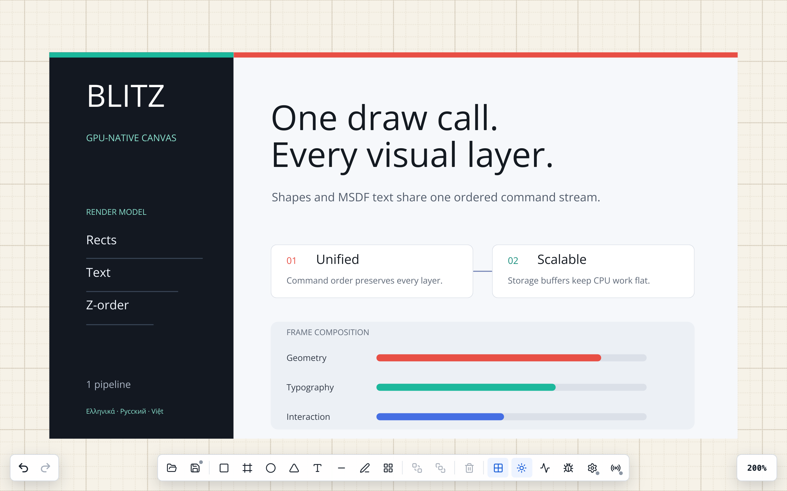
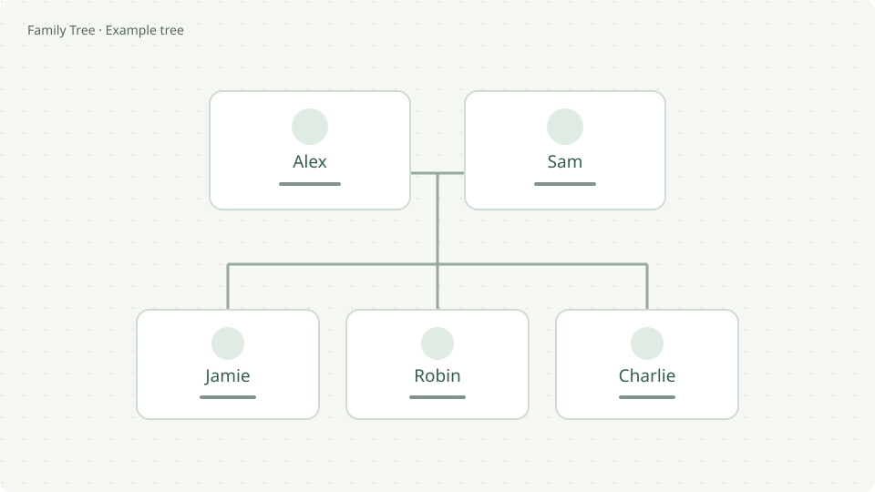
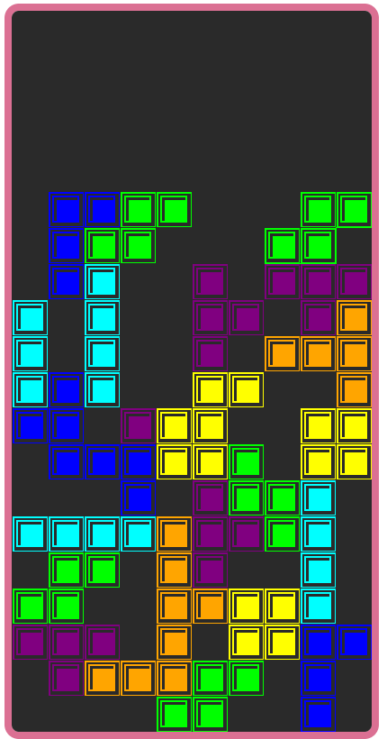
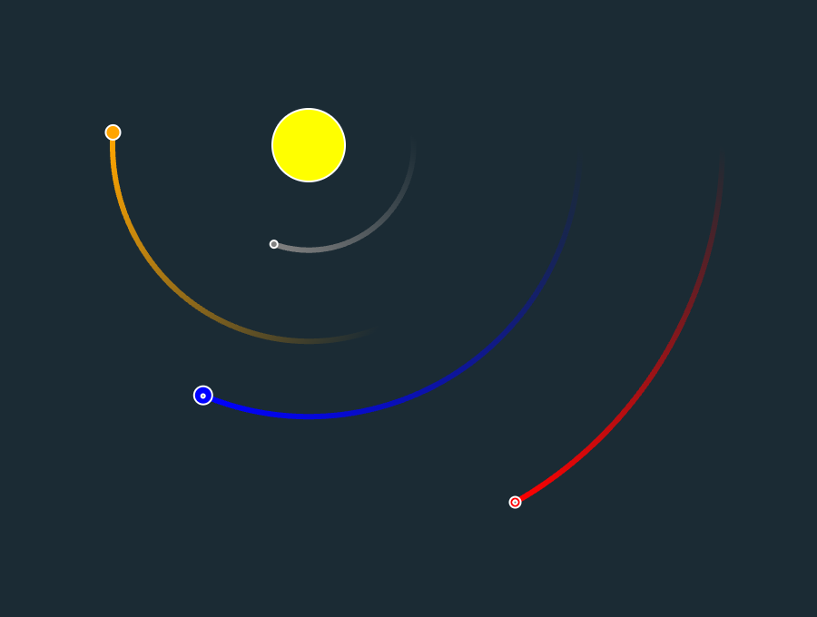
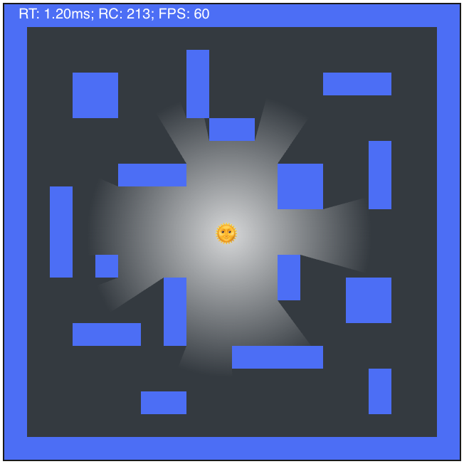

BetterWM
Column-based tiling window manager for macOS. Tile windows by ⌥-dragging them into place; everything else stays a normal, freely movable window.

Senior Software Engineer · Berlin
I work on canvas architecture at Miro. Outside work, I build macOS tools and experiment with WebGPU, physics and interactive graphics.
11+ years in frontend architecture and web performance.
01 / Work
macOS tools, interactive graphics and a family tree editor.
Column-based tiling window manager for macOS. Tile windows by ⌥-dragging them into place; everything else stays a normal, freely movable window.

WebGPU canvas backed by a C entity component system compiled to WebAssembly. One draw call for shapes, text and overlays.
Keyboard-first, Spotlight-style file navigator for macOS. AppKit front end over a C engine.

Local-first family tree editor with an interactive canvas, automatic layout and genogram notation. Works offline, keeps photos in your tree file and exports to PDF.
Side projects
Exploring physics, light and play.

Tetris from scratch in TypeScript: seeded random generator, level progression and a tiny DOM renderer.

N-body solar system simulator on a 2D canvas with real masses and Newton's constant. Follow any planet, tune the time step live.

2D ray-cast lighting on canvas. Draw walls with the mouse and watch the light cast shadows in real time.
02 / Background
Senior Frontend Engineer, Canvas Core · Berlin, Germany
Frontend Engineer · Berlin, Germany
Frontend Engineer, Yandex Travel & Avia · Yekaterinburg, Russia
Lead Frontend Engineer · Yekaterinburg, Russia
Ural State University named after A. M. Gorky